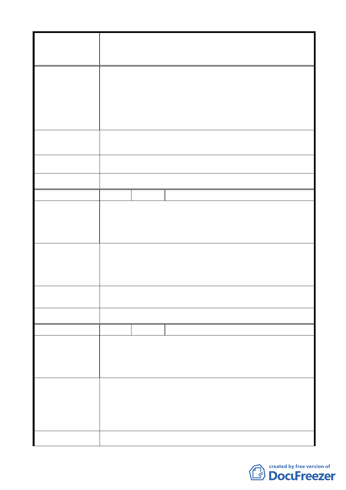

變更臺北市中山區北安段三小段 297-1 地號等20 筆高職
案 名 用地為機關用地（供國防部國防專區使用）及抽水站用地主
要計畫案
游），在此上游處設置抽水站是否合適？
2. 員山分子洪道建立後，基隆河沿岸水患發生機率已大幅
降低，在此上游處設置抽水站有此需要嗎？實在不需！
3. 抽水站區域將國防專區占去一角，使國防專區不為一完
整的基地，為了市容美化及發展，建議將抽水站區域併
入國防專區一併設計規劃，以達市容美觀。
建 議 辦 法 同陳情理由。
市 府 回 覆 意 見 同編號 5（二）市府回應說明。
大 會 決 議 同編號 5 決議。
編 號 15 陳情人 潘安黎
此處淹水第一次在民國 51.2 年間，後在 400 巷建造一大排
水溝及河岸建造堤防。另一次為民國 93 年 9 月水災，起因
陳 情 理 由 為大直抽水站有一缺口及臺北市所有抽水站出問題，這次淹
得很厲害。現在員山子分洪道建造後，基隆河已無淹水現象。
1. 不必建造新的抽水站，北安路附近已有抽水站兩處。不
要再浪費國庫的預算。
建 議 辦 法 2. 去年此地公園有些積水，電請大直消防隊以抽水泵抽
乾。所以可買抽水泵即可。
市 府 回 覆 意 見 同編號 5（二）市府回應說明。
大 會 決 議 同編號 5 決議。
編 號 16 陳情人 陳國龍
1. 大直抽水站抽水量不足造成淹水，是否是現有抽水站機
組老舊。
陳 情 理 由 2. 國防專區使用造成現有住戶（居民）困擾。
3. 臺北市可用地區不多，寸土寸金，不需要多於浪費。
1. 現有的抽水站功能改善，機組汰舊換新，應可改善抽水
量不足。
建 議 辦 法 2. 國防部應安置居民搬遷，而不影響居民住的地方。
3. 臺北市多蓋一些平價住宅，讓一些買不起的人也能有住
的權利。
市 府 回 覆 意 見 同編號 5（二）、（三）市府回應說明。
- 14 -